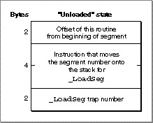

Legacy Document
Important: The information in this document is obsolete and should not be used for new development.
Important: The information in this document is obsolete and should not be used for new development.


The Jump Table
The loading and unloading of segments are implemented through your application's jump table, an area of memory in your application's partition that contains one entry for every externally referenced routine in every code segment of your application. The location of the jump table is illustrated in Figure 7-1.
- Note
- This section describes how the Segment Manager works internally and is included for informational purposes only. You don't need this information to use the Segment Manager routine. Moreover, the information presented here might not be accurate for your development system. See the note on page 7-7. ·
Figure 7-1 The location of the jump table
The jump table is accessed through the A5 register and is therefore part of your application's A5 world.
The jump table is created by your development system's linker and is stored in segment 0 of your application (which is the
'CODE'resource with an ID of 0). Segment 0 is a special segment created by the linker for every application; it contains information about the A5 world and the jump table. Figure 7-2 illustrates the structure of segment 0.Figure 7-2 The structure of segment 0
Segment 0 consists of these elements:
When the MPW linker encounters a call to a routine in another code segment, it creates a jump table entry for that routine. (All entries for a particular segment are stored contiguously in the jump table.) The structure of a jump table entry varies according to whether the segment it references is loaded or unloaded. If the segment is not yet loaded into memory, the jump table entry has the structure illustrated in Figure 7-3.
- Size above A5. The size (in bytes) from the location pointed to by register A5 to the upper end of the application space.
- Size of globals. The size (in bytes) of the application global variables plus the QuickDraw global variables.
- Length of jump table. The size (in bytes) of the jump table.
- A5 offset of jump table. The offset (in bytes) to the jump table from the location pointed to by register A5. This offset is stored in the global variable
CurJTOffset.- Jump table. A contiguous list of jump table entries.
Figure 7-3 Format of an MPW jump table entry when the segment is unloaded

The jump table refers to segments by segment numbers assigned by the linker. If the segment isn't loaded, the entry contains code that loads the segment. When a segment is unloaded, all its jump table entries are in the "unloaded" state. When a call to a routine in an unloaded segment is made, the code in the last 6 bytes of its jump table entry is executed. This code calls the
- Note
- Some development systems use a different format for jump table entries of unloaded routines to circumvent the 32K-byte limitation on the size of segments, global data, or the jump table itself. Consult the documentation for your development system to see whether it uses the jump table entry formats described in this section and whether you can safely call the
UnloadSegprocedure (which changes jump table entries). ·_LoadSegtrap, which loads the segment into memory, transforms all of its jump table entries to a "loaded" state, and invokes the routine by executing the instruction in the last 6 bytes of its jump table entry. Figure 7-4 illustrates the format of a jump table entry in the "loaded" state.Figure 7-4 Format of an MPW jump table entry when the segment is loaded
Subsequent calls to the routine also execute this instruction. When you call
UnloadSeg, it restores the jump table entries to their "unloaded" state. Notice that the last 6 bytes of the jump table entry are always executed; the effect depends on the state of the entry at the time.To set all the jump table entries for a segment to a particular state, the Segment Manager needs to know exactly where in the jump table all the entries are located. It gets this information from the segment header, 4 bytes at the beginning of the segment that contain the offset of the first routine's entry from the beginning of the jump table (2 bytes) and the number of entries for the segment (2 bytes).